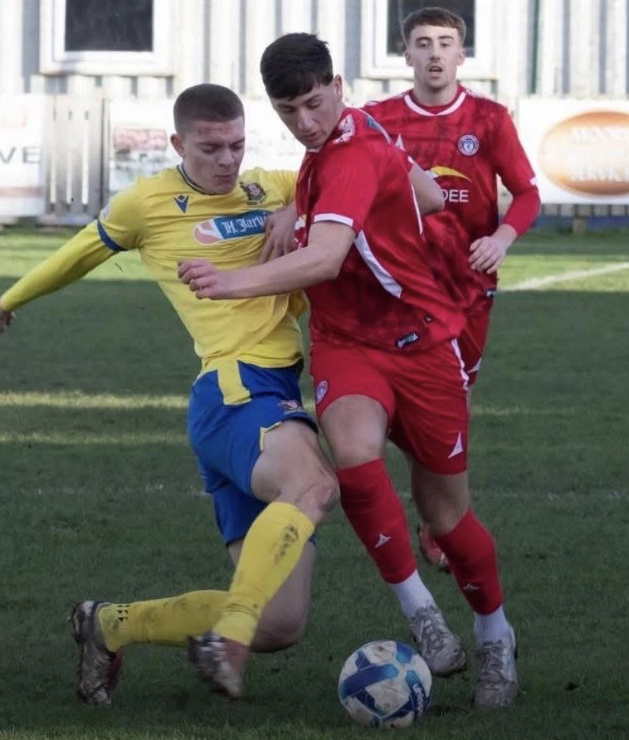
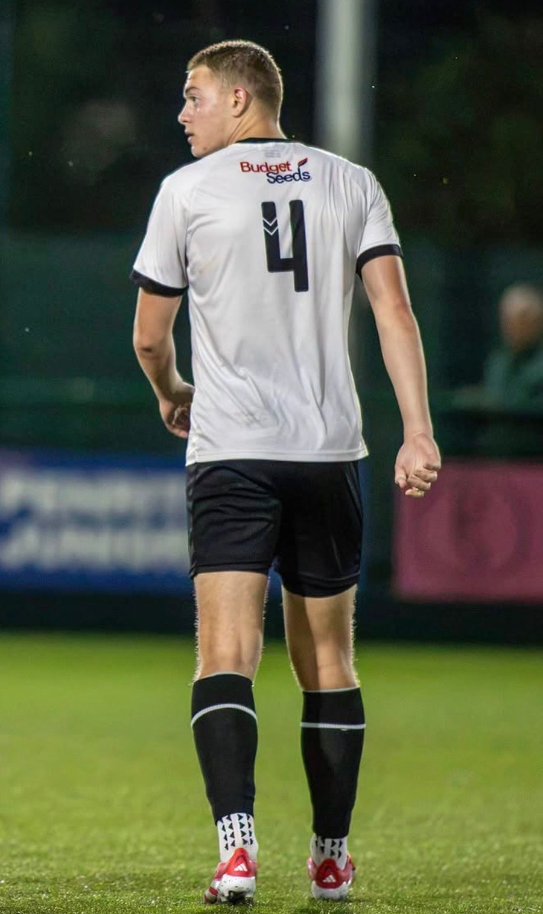

Central midfield is Joe's primary position — the analysis on The Complete 8 is built around it. He is also profiled at centre-back, with 13 senior games across four clubs and current EFL interest in the role.
The modern centre-back is not the same job it was ten years ago. Height and heart are the starting point, not the finish. Recruiters now look for five things at the same time: aerial dominance, recovery pace, positional intelligence, front-foot defending, and the ability to play out from the back under pressure.
At 6'2" with the athletic and technical profile evidenced across this site, Joe has the full modern CB profile. He has played 13 senior games at centre-back across four clubs — Scarborough Athletic U19s, Gateshead Academy, Billingham Town and Marske United — spanning academy football through Step 5, and is currently being profiled by EFL clubs for the position.

Five areas of the game a modern centre-back has to deliver. Click any petal to jump to Joe's evidence for that competency.
The modern CB has to win aerial duels on both sides of the pitch — defending set pieces and long balls, and attacking corners as a genuine goal threat. Height and jump numbers are the starting point; timing and intent are what turn them into wins.
Verbatim scout quote on aerial ability / physical dominance to be selected from source PDFs and slotted here.
Joe wins his headers because he combines the physical base (6'2", genuinely explosive vertical) with the timing to attack the ball at its highest point rather than react to it. The verified 60cm countermovement jump and 62.5cm Abalakov jump place him firmly in the elite range for his age group.
That physical base translates into two jobs: dominating defensive set pieces at Step 4 and higher, and being a genuine attacking threat from corners. Both boxes.
Modern back lines defend high. That works only if the centre-backs have the recovery pace to close down a runner in behind, and the acceleration to stop attackers turning into space. Slow CBs cost goals; fast CBs let a whole team play higher.
Verbatim quote on pace / physical athleticism from source PDFs (Lee Moore reference already on the Complete 8 references the improvement in running speed and technique — a strong candidate to reuse here).
Joe's 34 km/h top speed is verified across three independent platforms: PROformance instrumented testing, STATSports GPS in match conditions, and PlayerMaker boot-strap data. That speed is not lab-only — it shows up when he is chasing a ball or a runner in a game.
The 5m sprint at 0.91s matters more than the top-end for a CB. It is the burst that turns a lost yard into a recovered one when an attacker gets on the shoulder. Both numbers give a coach freedom to play a higher line.
The centre-back is the eyes of the back line. He is reading the game two passes ahead, positioning early, and organising the players around him so the defence never has to react — it acts. This is the difference between a defender who runs a lot and one who covers ground he never has to.
Verbatim quotes on reading the game, positioning, organising — several relevant lines exist in the source PDFs (Kinniburgh, Barnes and others). To be selected and slotted here.
Second complementary quote on leadership / communication.
The 0.91 vs 2.74 goals-per-90 pattern at Marske United across 2025/26 is a defensive impact number — it does not care whether Joe is nominally playing midfield or the back line. The intelligence that reduces goals against from a midfield position transfers directly to CB, and typically becomes even more valuable there where the whole back line takes its cue from the CB's positioning.
This is also where the leadership signal sits. Multiple scouts have flagged Joe's communication and organising quality as unusually mature for his age. In a back-line role, that quality shows up in the shape of the entire defence, not just his own actions.
Modern CBs step out to defend, not shuffle back. They engage early, meet attackers on the front foot, and win the physical exchange when it comes. The alternative — dropping and dropping — gives strikers time to turn, pick a pass, and shoot.
Aaron Barnes (Stoke) quote on tackling — the strong tackling line already on The Complete 8 lifts naturally to this section.
Joe defends on the front foot because he has the physical tools to make that decision safely — the 5m burst to close space, the frame to hold his line in a duel, and the strength to win a shoulder-to-shoulder. He does not need to sit off.
The verified broad jump of 305cm is a proxy for lateral power — the same trait that shows up in a defensive slide tackle or a hold-off against a striker's roll.
The recruitment gap between CBs who play out from the back and CBs who just hoof it is now huge. Pro clubs want the ball-playing centre-back: two-footed, comfortable receiving under pressure from a pressing striker, able to progress the ball with a pass through the lines rather than around them.
David Banjura or William Kinniburgh quote on passing weight / receiving under pressure — both scouts already give strong verbatim on this from midfield positions. Lifts directly to CB context.
Second quote on two-footedness or playing forward.
The passing evidence for Joe already exists on this site, gathered from his midfield performances. Two-footed, verified for weight and range, comfortable receiving on the back foot with a defender close. All of that is exactly what a pressing striker asks a CB to demonstrate — and it is the part of a CB's game that decides which level a player ends up at.
This is the section that will grow fastest as CB-specific footage is added, because the evidence base from midfield is already deep.

Thirteen senior games at centre-back across four clubs, spanning academy football through Step 5. Consistent selection across multiple coaches independently seeing the CB profile.
Alongside the ongoing central-midfielder pathway, Joe is currently being profiled by EFL clubs for the centre-back position — a direct scout signal that the modern CB profile above matches what pro clubs are actively recruiting for.